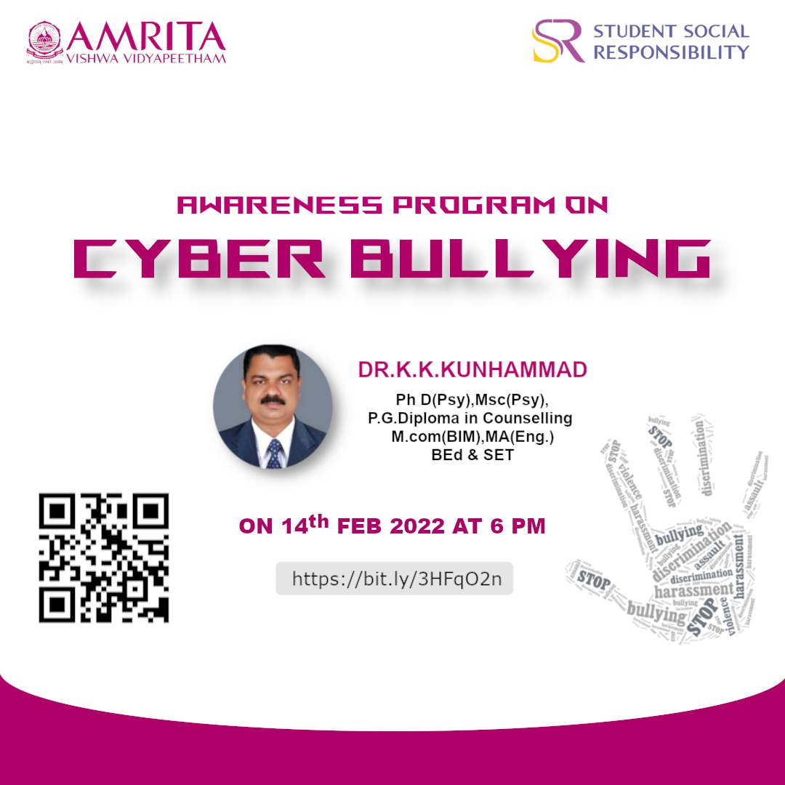
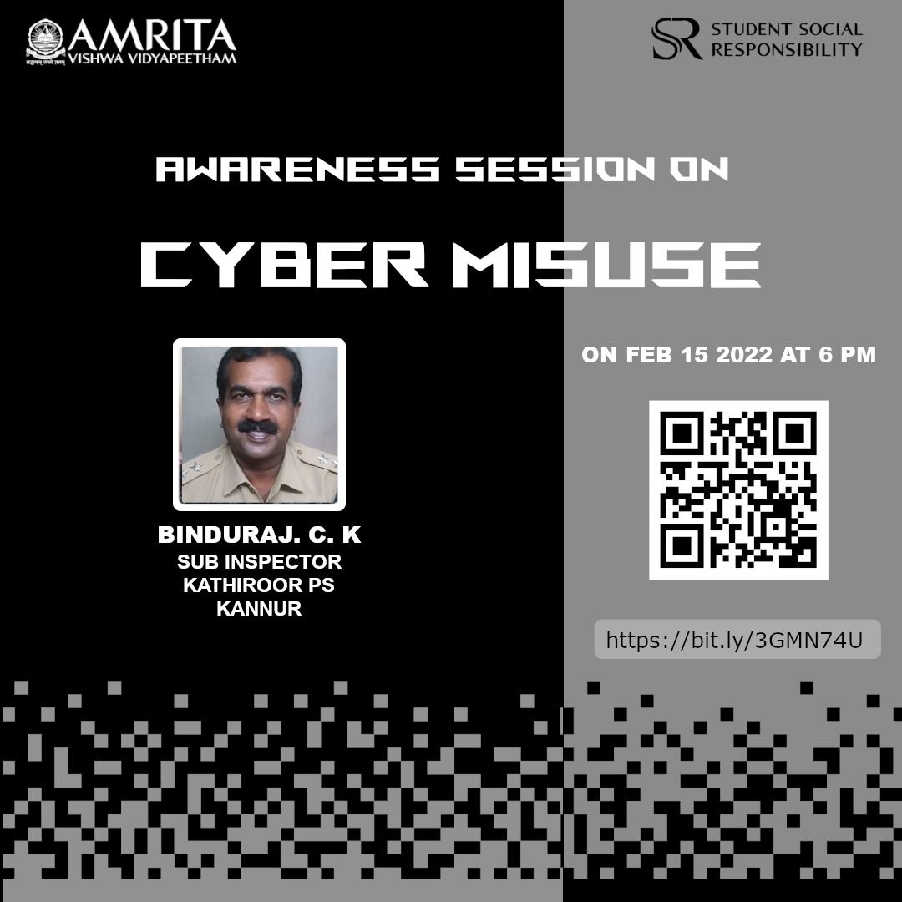
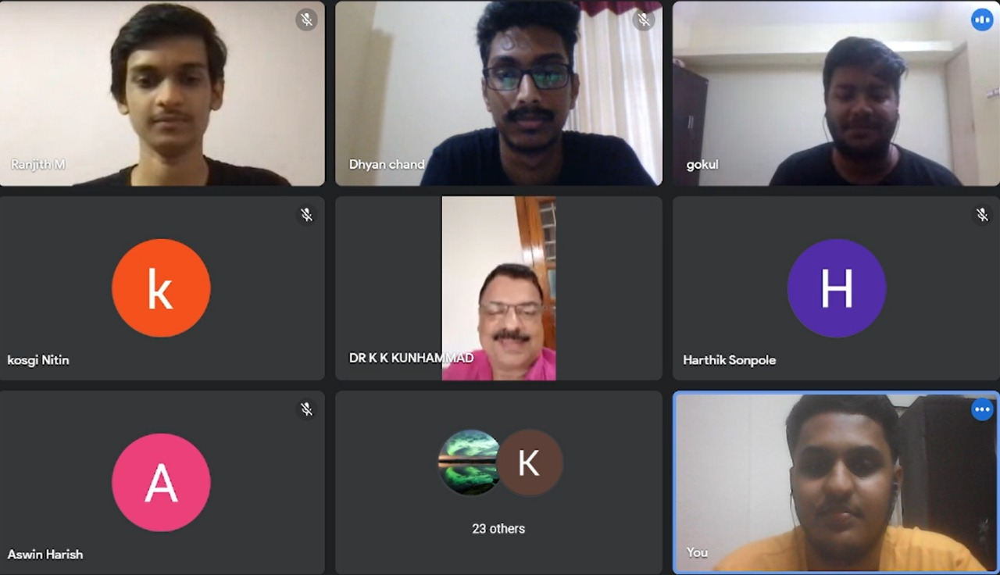
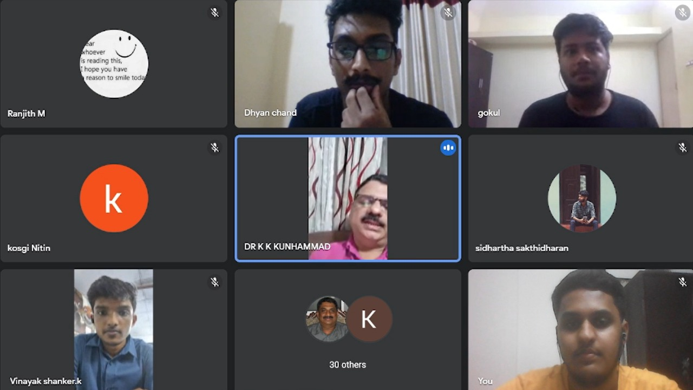
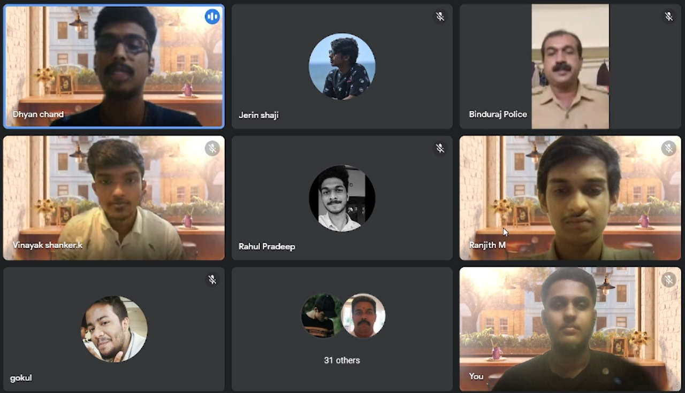
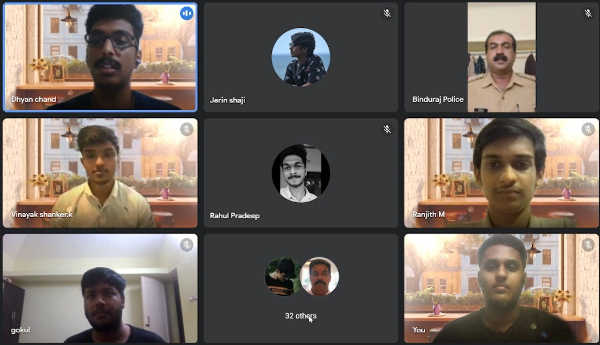

The Mission:
With this project we are trying to spread awareness to youth about cyberbullying and
the impacts it has on us. Further we would be talking about the different ways to protect
ourselves from being cyberbullied and steps to take when we are in such a situation.
Core Contributors
SSR group 39
Team Members:
- Karthik Narayanan (AM.EN.U4CSE19327)
- M Ranjith (AM.EN.U4CSE19331)
- Gokul Krishnan G (AM.EN.U4CSE19321)
- Dhyan Chand S (AM.EN.U4CSE19318)
- Vinayak Shankar K (AM.EN.U4CSE19360)
Activities Undertaken
1. Session on Cyberbullying and its impact on children.
- Speaker - DR.K.K.KUNHAMMAD, psychologist and an hr trainer with a masters degree and Phd in Psychology and also a PG Diploma in Counselling.
- Interactive session with students.
- Discussed various forms of cyberbullying, and its effects on children.
- Further discussed on how various people such as parents, teachers can help children who were cyberbullied.
- Participation of more than 50 students.
2. Awareness session on Cyber Misuse
- Speaker - BINDURAJ. C. K Sub Inspector at Kathiroor Police Station.
- Made students aware of how Cyber Misuse happens and how to protect ourselves from it.
- The speaker shared different incidents of Cyber Misuse with the audience.
- Participation of more than 60 students.
Background of the Problem
- According to a worldwide poll done in 24 countries in 2011, 66 percent of the 18,687 persons interviewed, including children and adults, saw, read, or heard anything about cyberbullying.
- According to the Cyberbullying Research Center in the United States, one in every four teenagers has been the victim of cyberbullying, and one in every six has perpetrated it.
- According to the 2014 EU Net Children Go Mobile Report, cyberbullying affected 12% of the 3,500 children aged 9 to 16.
- According to the 2011 EU Kids Online survey, 6% of the 25,142 children aged 9 to 16 years old in Europe had been bullied online, while 3% had engaged in cyberbullying themselves.
Media
Posters:


Images:
Session 1:


Session 2:


Videos:
Obstacles Faced
- There were frequent network issues during the session by Binduraj Sir on Cyber Misuse.
- We expected about more than 60 participants in our first session, but the count of participants did not reach the expected mark.
- We also had difficulty in finding the second speaker for our project.
- We had to change our speakers as our previous speaker was only available after 3-4 months.
Total Man hours for accomplishment
50-60 hours
Road Ahead
- Our next focus if possible, would be to conduct more such sessions on cyber related issues.
- We would like to conduct these sessions offline so that there would be more interaction between the speaker and the audience.
- With the help of municipal and panchayat association groups, we would like to conduct awareness sessions on cyber related topics for them and thus extend these programs to a more diverse population.
Roses and Thorns